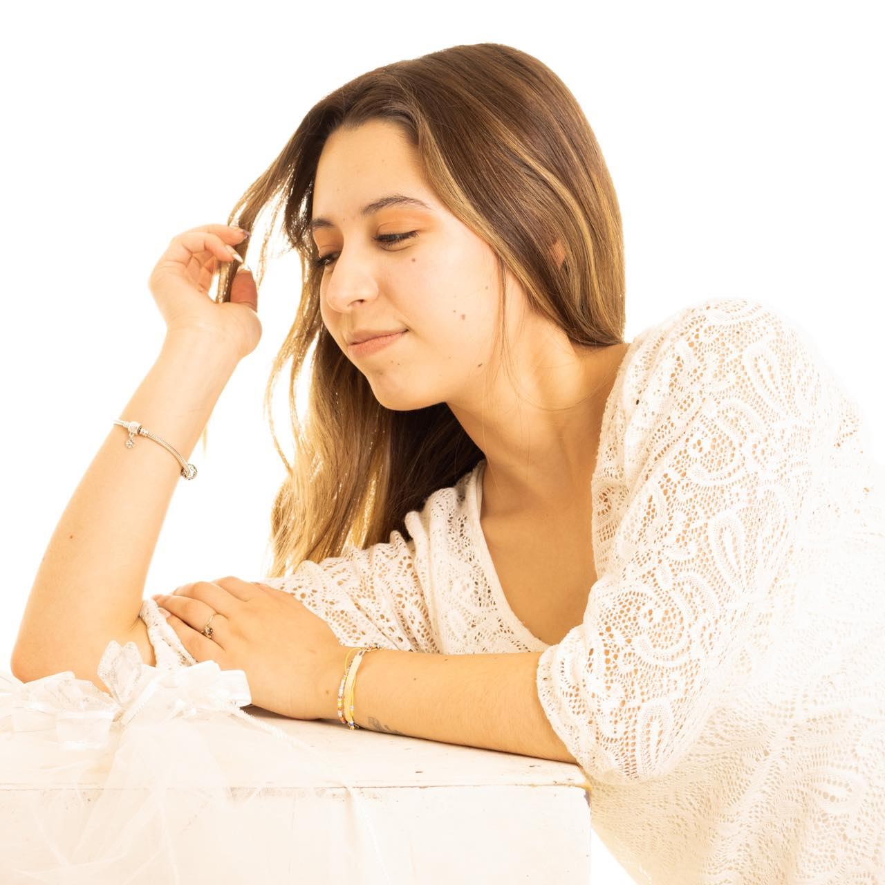
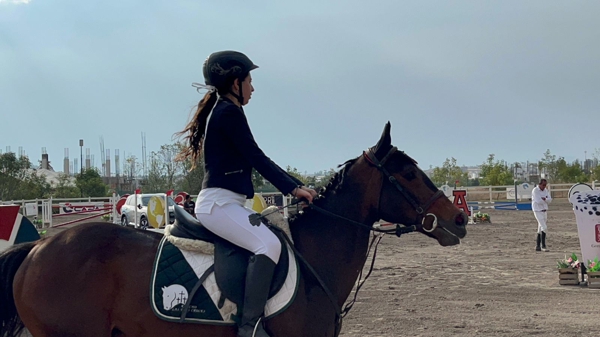
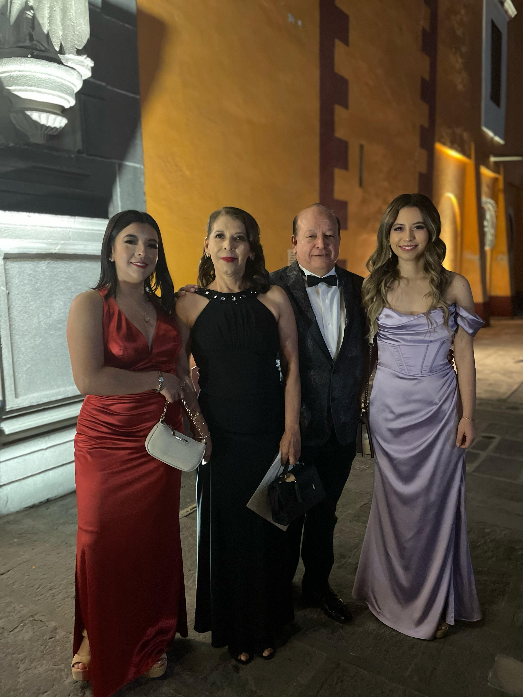

¿Quién soy?
Soy Marcela Flores Cedillo soy estudiante de diseño gráfico de la
Benemérita Universidad Autónoma de PueblaTengo 22 años, y nací en Puebla pero vivo en Cholula. Me gusta dibujar en mis tiempos libre y ver películas y series con mi familia o con mi novio.
Mi animal favorito son los perros pero también los caballos ya que sé montar, hice un poco de equitación un tiempo. No me gusta hacer ejercicio pero a veces lo hago.

- Me considero una persona :
- Penosa
- Graciosa
- Callada
- Tierna
Mis Hobbies
Son pintar cerámica, ver series y películas con mis papás o mi novio.Pero tambien disfruto ir al cine.De igual manera me encanta salir con mis amigas a comer,salir a fiestas, ir por un café. Uno de mis hobbies recientes es ir a clases de equitación desde hace 2 años aunque veces por la escuela no me da mucho tiempo de ir.

Mi familia
Mi familia se conforma de 5, mi papá, mamá, hermano de 35 años y mi hermana de 30 años, yo soy la más pequeña de la casa. Actualemente vivo solamente con mis papás ya que mis hermanos ya están casados. De parte de mi hermano tengo un sobrino y una sobrina. En mi casa tenemos dos perros y un gato. Mi perro se llama coca y es un pug negro, el otro es un chihuahia el cual lo tengo desde los 5 años, y mi gato que apenas lo acabo de adoptar que se llama micaela.
- Papá: José Luis Flores
- Mamá: Gabriela Cedillo
- Hermana: Mariana Flores
- Hermano: Luis Alberto
Flores
- Sobrino:Gabriel Flores
- Sobrina: María José Flores